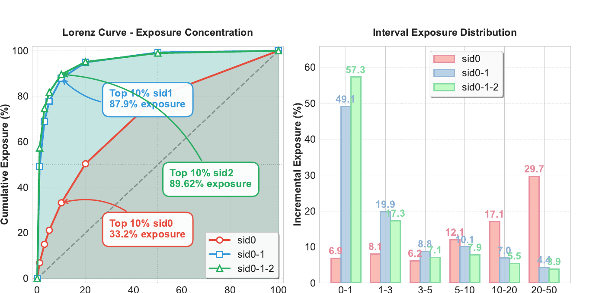
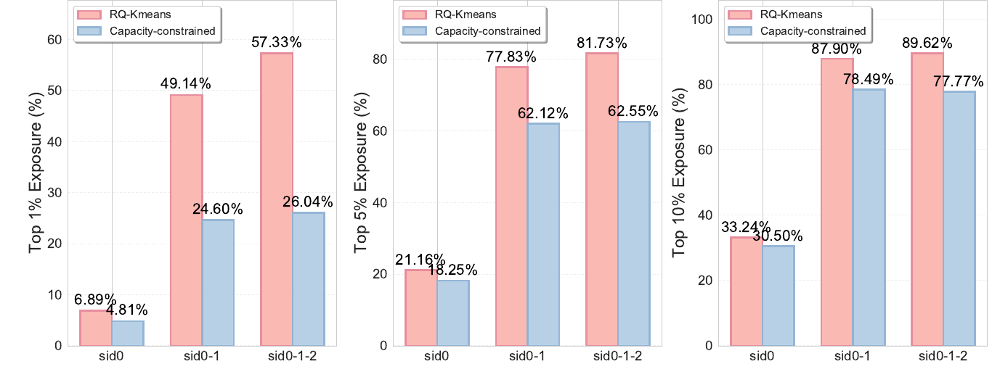

UniRec: A Unified Expressive-Aligned Generative Recommendation Framework for E-commerce
Shopee 的作者统计了标准 RQ-KMeans 生成的三层语义 ID（SID）：最常曝光的前 10% 完整编码拿走了 89.62% 的曝光，生成式推荐模型的概率因此集中在少数热门编码上。UniRec 让模型先生成商品的二级、三级类目 token，再生成三层 SID，并在构建 SID 时给每个编码加一个按曝光加权的容量上限。先生成类目，后面每一层 SID 只需要在这个类目里挑。离线 HR@50 比 OneRec-V2 相对高 22.6%；线上对比原多阶段链路，订单 +4.76%，GMV +5.60%。
生成式推荐把每个商品编码成几层离散的语义 ID（SID），模型逐层生成这些 ID 来完成召回和排序。Shopee 的这篇论文指出它和判别式排序模型之间的一个差距：判别模型给候选打分时能直接看到商品的类目、店铺、品牌这些特征，和用户特征做交叉；生成模型在生成第一层 SID 之前，没有看到任何商品侧信息。UniRec 的核心做法叫 Chain-of-Attribute（CoA）：先让模型生成商品的类目，再在已知类目的条件下生成 SID，相当于在解码路径里补回判别模型能用的商品特征。配套的还有按曝光量限制码本负载的 SID 构造、给解码过程注入场景和组合特征的 CDC，以及 RFT 加 DPO 的业务对齐。离线 HR@50 比最强基线 OneRec-V2 相对高 22.6%；在 Shopee 主 feed 和落地页上线，订单 +4.76%，GMV +5.60%，端到端延迟 110ms，原多阶段链路是 266ms。
论文在 arXiv 上的标题是 “UniRec: Bridging the Expressive Gap between Generative and Discriminative Recommendation via Chain-of-Attribute”，本文按 arXiv 全文解读。
1. 生成式推荐差在哪里
判别式排序模型估计 ，也就是给定用户 和商品特征 ，用户产生互动 的概率，商品特征在打分时全部可见。生成式模型按 逐层生成 SID，生成第一层时只看用户，不看任何商品特征。
作者用贝叶斯公式说明这个差距从哪里来：
不随商品变化，所以按判别分排序等价于按 排序，而后者按链式法则展开正好是逐个生成商品特征。结论是：如果生成模型逐个生成商品的全部特征，它和判别模型的排序能力一样。实际系统做不到逐个生成全部特征，延迟太高，所以用几层 SID 压缩商品语义。类目、店铺、品牌这些判别模型直接拿来交叉的结构化属性，在压缩时被揉进了 SID，解码时不再显式出现，差距就出在这里。
2. 方法

2.1 Chain-of-Attribute：先生成类目，再生成 SID
CoA 在 SID 序列前面加 个属性 token ，生成顺序变成先属性、后 SID：
线上配置里，属性是商品的二级类目和三级类目（类目分 L1、L2、L3 三级，越往下越细），所以一个商品的解码路径是“二级类目 → 三级类目 → → → ”，比原来多两步。
先生成类目为什么有用：同类目的商品在 SID 空间里挨得近，知道类目以后，下一层 SID 的候选范围变小。作者把这一点写成条件熵的减少量 ，它等于属性和该层 SID 之间的条件互信息，只要两者相关就大于 0。每层出错的概率降下来，整条路径全对的概率就提高，beam search 也更稳。
2.2 带容量约束的 SID：按曝光量而不是商品数平衡码本
已有的平衡量化（如 OneRec 用的 RQ-KMeans）让每个码字分到的商品数接近，但商品热度是长尾的，商品数平均不代表曝光量平均。作者在 Shopee 线上数据上统计：按曝光量排序，前 10% 的第一层码字拿走 33.24% 的曝光；前 10% 的（,）组合拿走 87.90%；前 10% 的三层组合拿走 89.62%。

训练数据里高曝光的 token 路径出现得多，模型在 beam search 时就反复生成这几条路径，作者称之为逐层继承的马太效应。容量约束 SID 的做法是在每一层残差聚类里加一条约束：每个簇里商品的曝光权重之和 不能超过平均负载的 倍。
是第 个商品在当前层的残差向量， 是它被分到的簇， 是簇中心， 是它的历史曝光次数， 是总曝光除以簇数，线上 。精确求解是 NP 难，实际用两步贪心：先把每个商品分到最近的簇，再把超载簇里的商品挪到最近的未满簇，重复到重构误差不再变化。
2.3 CDC：告诉模型当前是什么任务，再补上组合特征
一个生成模型要同时服务点击、购买、加购、跨境等目标，以及主 feed、搜索、相似推荐、秒杀等场景。Task-Conditioned BOS 把固定的起始 token 换成按“目标 × 场景”查表得到的可学习向量，从第一步开始就把解码引向该场景的分布。
Content Summary 处理 token 之间的组合含义：同一个 跟在不同类目后面，代表的商品可能完全不同。直接给每对 token 组合建一个 embedding，两个 4000 词表的层就有约 1600 万个组合。CDC 改用 3 个哈希函数（$x+y$、、，、 为质数）把（二级类目, ）、（三级类目, ）、（, ）等组合映射到一张共享的哈希 embedding 表，拼成每一步的组合特征 。
2.4 解码器和业务对齐
解码侧序列是 [BOS, 属性 token, SID token]，作为 Q；用户最近 200 条点击行为的商品向量，再接上 100 个由多层 SID embedding 融合成的多模态向量，一起作为 K、V，经过 3 层带可学习门控系数的交叉注意力和 MMoE-FFN。每一步有一个独立的 Rank Head，把注意力输出、已生成前缀的 embedding、 和用户聚合表示拼起来，经 SENet 和 MaskNet 输出该步的 token 分布。
下一 token 预测只拟合曝光分布，不直接优化 GMV。RFT 给每条样本算一个业务奖励，在 batch 内减均值、除以均方根、截断后得到 ，把样本的损失权重乘上 。DPO 按同一请求下的曝光商品构造偏好对，购买 > 点击 > 仅曝光，并且只对最后一层 SID 回传梯度，前面各层的预测保持不动，免得对齐过程打乱前缀。两者合起来训练：
线上 RFT 和 DPO 的损失权重比是 20:3，DPO 的 。
3. 实验
3.1 主结果
这组实验要证明 UniRec 的召回质量高于已有生成式和判别式方法。数据是 Shopee 主 feed 连续 9 天的线上日志，几十亿条交互。指标 HR@K 是用 beam search 生成前 K 个候选，看目标商品是否在里面；“订单样本”只统计最终发生购买的样本。对比方法：SASRec，自注意力序列推荐模型，用学到的表示在 SID 码本上做最近邻检索；TIGER，编码器-解码器结构的生成式召回；OneRec-V2，decoder-only 加交叉注意力的生成式召回。三个生成式模型都是 0.05B 参数。
| 方法 | HR@50 | HR@100 | HR@200 | 订单 HR@50 | 订单 HR@100 | 订单 HR@200 |
|---|---|---|---|---|---|---|
| SASRec | 0.421 | 0.489 | 0.556 | 0.548 | 0.631 | 0.709 |
| TIGER (0.05B) | 0.437 | 0.508 | 0.578 | 0.567 | 0.652 | 0.731 |
| OneRec-V2 (0.05B) | 0.438 | 0.523 | 0.587 | 0.582 | 0.671 | 0.752 |
| UniRec (0.05B) | 0.537 | 0.618 | 0.688 | 0.672 | 0.774 | 0.867 |
全量样本上 UniRec 比 OneRec-V2 高 9.5 到 10.1 个点；订单样本上高 9.0 到 11.5 个点。作者把订单样本上的提升归因于 Task-Conditioned BOS 区分了点击和购买目标，以及 RFT 按 GMV 加权了样本。
3.2 属性链怎么选
这组实验要回答在 SID 前加哪一级类目最好。做法是对比不加属性和加不同类目组合，同时看每步 token 的 Top-3 命中率和最终 HR。
| 属性链 | @3 | @3 | @3 | HR@50 | HR@100 | HR@200 |
|---|---|---|---|---|---|---|
| 不加属性 | 0.314 | 0.752 | 0.952 | 0.458 | 0.532 | 0.595 |
| L1 → SID | 0.488 | 0.776 | 0.961 | 0.471 | 0.569 | 0.622 |
| L2 → SID | 0.591 | 0.789 | 0.963 | 0.515 | 0.597 | 0.664 |
| L3 → SID | 0.654 | 0.801 | 0.967 | 0.517 | 0.601 | 0.670 |
| L2 → L3 → SID | 0.682 | 0.821 | 0.971 | 0.537 | 0.618 | 0.688 |
不加属性时第一层 SID 的 Top-3 命中率只有 0.314，加上二、三级类目后升到 0.682。改善集中在第一层，因为第一层 SID 原本完全没有商品侧条件，类目信息补进来后选择范围缩小最多。类目越细，第一层命中率越高；L2 → L3 两级连着生成效果最好。
3.3 各组件消融
这组实验要量化容量约束 SID、Task-Conditioned BOS 和 Content Summary 各自的贡献，做法是每次去掉一个组件，和完整模型比较。
| 配置 | HR@50 | HR@100 | HR@200 |
|---|---|---|---|
| 完整模型 | 0.537 | 0.618 | 0.688 |
| SID 改用 RQ-KMeans | 0.481 | 0.558 | 0.627 |
| 去掉 Task-Cond. BOS | 0.493 | 0.570 | 0.638 |
| 去掉 Content Summary | 0.485 | 0.565 | 0.637 |
三个组件去掉任何一个，HR@50 都下降 4 到 6 个点。换回 RQ-KMeans 后，作者又对比了两种 SID 的曝光集中度：三层组合上，前 1% 的 token 在 RQ-KMeans 下占 57.33% 曝光，容量约束后降到 26.04%。

Task-Conditioned BOS 另做了多场景实验：在三个线上场景的混合样本上训练，单场景各训一个模型的 HR@100 是 0.470，混合训练不加场景提示是 0.486，加上场景 BOS 是 0.510。混合训练本身就有收益，加上场景条件后在三个截断点上都再提高一些。
模型宽度 从 64 增大到 512，HR@50 从 0.397 升到 0.557，还没有饱和。
3.4 线上 A/B
线上在主 feed 和落地页两个场景做实验，对照组是原来的判别式多阶段推荐系统，每组分 20% 用户流量。
| 指标 | 整体 | 主 feed | 落地页 |
|---|---|---|---|
| 订单数 | +4.76% | +4.27% | +5.78% |
| GMV | +5.60% | +5.42% | +6.19% |
| PV 点击率 | +5.37% | +5.37% | — |
端到端延迟 110ms，和单个排序模型相当；原来的多阶段链路是 266ms。
4. 局限
论文没有单独的局限讨论。从实验设置看有两点需要注意。一是所有离线对比都在 Shopee 内部数据上做，基线也都限制在 0.05B 参数，没有公开数据集上的结果。二是线上对照组是整套判别式多阶段系统，A/B 的提升包含了生成式架构、CoA、容量约束 SID、CDC 和对齐的全部作用，论文没有给出各组件在线上的单独贡献。
5. 实践意义
- 如果你的生成式召回第一层 SID 命中率低，可以先试 CoA：在 SID 前加一到两级类目 token，只多两步解码，表 2 里第一层 Top-3 命中率从 0.314 升到 0.682。
- 做 SID 时检查曝光集中度，不只看商品数是否平均。商品数均衡的码本仍可能让少数热门组合吃掉近九成曝光，beam search 会反复走这几条路径，按曝光量加容量约束只改聚类的分配步骤，成本不高。